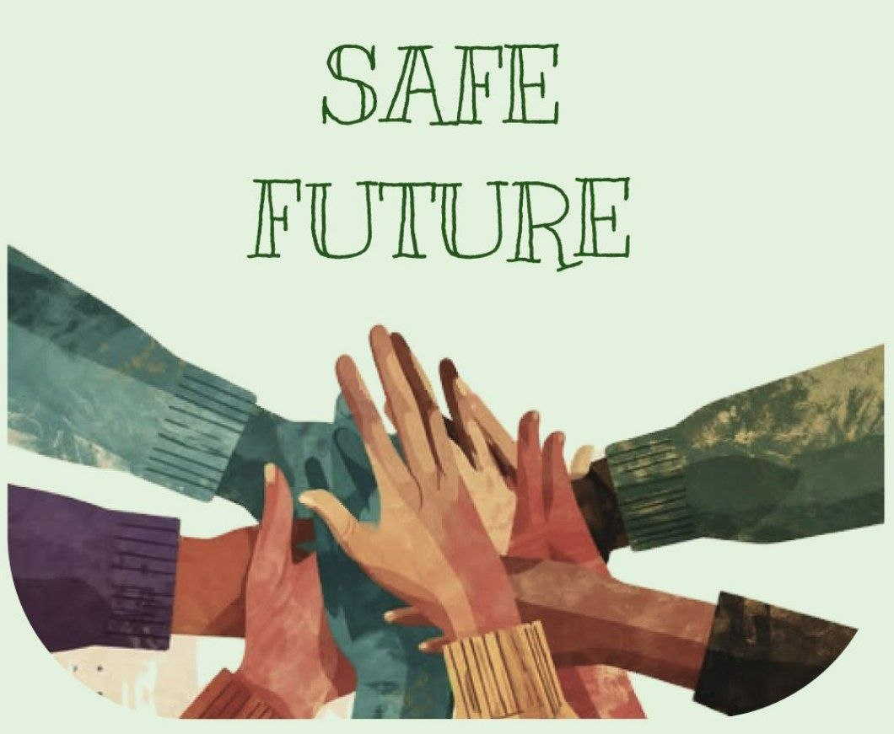

KIND
TEAM
NESS


Echipa KindnessTeam este formată dintr-un grup de tineri voluntari care cred în puterea faptelor bune și a implicării în comunitate. Ne unim eforturile pentru a sprijini familiile vulnerabile și persoanele aflate în dificultate, oferindu-le ajutor, atenție și susținere morală prin activități de voluntariat.
Pentru noi, fiecare gest de bunătate contează. Ne dorim să promovăm solidaritatea, empatia și responsabilitatea socială, contribuind pas cu pas la construirea unei comunități mai calde, mai unite și mai sigure pentru toți.